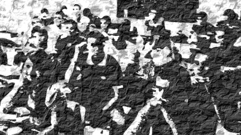

Proposta para o Festival CulturaDigital.Br 2011
Se gostar, apoie nossa proposta aqui: http://culturadigital.org.br/#!/chamada-publica/projetos-inscritos/intervencao-mutante-actantes-do-semi-arido-ne r

NOME DO PROJETO
Intervenção Mutante: Actantes do Semi-Árido / NE
DESCREVA A SUA PROPOSTA
Objetivo
Intervenção de um grupo, componentes da Rede Actantes, no Festival Internacional CulturaDigital.Br. Estudantes de uma área “alienígena”. Mutantes. Assimiladores e potencializadores das articulações para 3 ações já em andamento no contexto local: Projeto de Pesquisa sobre MetaReciclagem, Tecnologia Social e Atores-Rede (submetido à UFCG); Conferência Internacional de Gestão Ambiental e Tecnologias Sociais no Semi-Árido (CNPQ); Projeto de um Laboratórios de Experimentação no Sertão (OntoLab).
Descrição do projeto
Actantes é uma rede em formação. O nome é um acrônimo que significa Actantes Constroem Tudo:Atores Naturais, Textuais e Sociais. Inspirado no conceito da semiótica greimasiana, que foi apropriado pela Actor-Network Theory, Actantes quer dar a entender que tudo é apenas ação antes de se tornar projeto ou realização delimitada. A lista ACTANTES funciona como elemento de planejamento e articulação de produções associadas à ética hacker, cultura livre e tecnologia social. Principalmente encontros e eventos no Nordeste do Brasil.
O projeto proposto aqui é uma ação de fortalecimento e articulação para três outras propostas de projetos já em andamento: 1.) Projeto de Pesquisa sobre MetaReciclagem, Tecnologia Social e Atores-Rede (submetido à UFCG); 2) Uma conferência Internacional em Gestão Ambiental e Tecnologia Social no Semi-Árido Nordestino a ser financiada pelo CNPQ (projeto já submetido) 3) Um Laboratório de Experimentação no Sertão da Paraíba (em planejamento).
Uma área essencialmente alienígena (sob a ótica da práxis acadêmica) aos movimentos que se desenrolam no Festival Internacional CulturaDigital.Br é a Administração. Os cursos de bacharelado em Administração tem seu foco muito restrito a um contexto industrial norte-americano da década de 50 do século XX. A divisão de currículos e a maioria da discursividade na área estão completamente alheias ao universo contemporâneo de reação social à dominância do capitalismo predatório. Questões como as da tecnologia social, da economia solidária, das redes de hacktivismo, geralmente não são tratadas e quando o são estão dentro do escopo da visão dominante que se orienta pela ideologia da competitividade, da competição, da estratégia competitiva.
Sendo assim propomos uma imersão deste pequeno grupo, mutantes da rede Actantes, no Festival Internacional CulturaDigital.Br, como uma intervenção potencializadora das mutações com a Cultura Digital nas ações em andamento já citadas .O grupo é composto pelo proponente (ativista da práxis nas redes de cultura digital e professor de Administração da UFCG) e três estudantes de atuação destacada no curso de Administração da UFCG do Campus de Sousa – PB, Semi-Árido Nordestino. Os estudantes foram escolhidos por sua inquietação, busca e excelentes atuações no que se refere à procura de outras práxis que não as da administração corporativa limitada ao modelo empresa capitalista com fins lucrativos. Nós os consideramos os mutantes que precisamos estimular para, na filosofia e práxis das redes-de-atores da Cultura Digital, criarem as novas práticas da Administração para estas realidades.
Que hipóteses e métodos serão trabalhados?
Método é caminho, filosofia e técnica para se chegar aos objetivos propostos. Neste caso precisa-se levar em consideração que existe uma interlocução importante entre a intervenção proposta aqui e a [des]conferência que está sendo planejada pela rede MetaReciclagem para este Festival. A agência da MetaReciclagem nos permite pensar em hipóteses. Entendemos a MetaReciclagem como algo que potencializa outros algos. Interpretamos a partir de quebra-cabeças de milhões de peças sempre incompletos e mutantes como a MetaReciclagem constitui "parte" desses outros “algos”. Nos parece que constitui compondo uma forte interlocução entre redes. Trazer mutações para uma rede que dialoga com a MetaReciclagem pode ser portanto um forte elemento de produção das realidades associadas à Cultura Digital para qualquer dos contextos que ela perpasse. E esta passagem pode ser vista nitidamente em operação no contexto do herói cultural proposto por Daniel Duende para a noção de mitoreciclagem. E aqui se apresenta então a aposta no método, nas palavras do próprio Daniel Duende Carvalho, nas entrelinhas a seguir.
http://rede.metareciclagem.org/wiki/MutiraoHeroiCultural
Uma das ações mais importantes de se ter em mente quando se fala de “ruptura paradigmática” e mudança do modo de fazer é a recuperação do “sentimento de criador”. No contexto em que vivemos, bombardeados pela influência da sociedade industrial mega-corporativa na nossa cultura (e em nossa mitologia), é natural pensar que somos muito pouco capazes de FAZER coisas, MODIFICÁ-LAS a nosso modo. É senso comum entre a maioria que a informação que vem de cima é mais forte e certa e que a indústria tem um poder de fazer que anula completamente o nosso.
Isso vai contra o pensar da maioria de nós, ou ao menos do pensar do “nós” que eu conheço desta lista. Nós acreditamos que podemos FAZER coisas, acreditamos que podemos MODIFICÁ-LAS, acreditamos na nossa importância e nos imbuímos de responsabilidade pelo mundo em que vivemos. Reciclando tecnologia, agindo contra o movimento de afastamento entre a sociedade incluída e a excluída, recuperando o senso de protagonismo e de relevância das pessoas…
Bem entendido, este é o papel de um “herói cultural”.
Muitos autores transformam o “herói cultural”, o elemento meio pessoa meio lenda que age dentro de uma cultura, modificando-a, em algo distante de nossa realidade. Por vezes dão a impressão de que isso é algo que existe e faz sentido apenas em culturas “primitivas” ou então articuladas, elaboradas desde sua base até as mais capilares manifestações, de um modo muito diferente da nossa. Acredito que isso não poderia estar mais longe da verdade. Mesmo a cultura industrial/informacional é revestida a seu modo em uma malha mítica. Dentro de seu conceito os shamans, os criadores e mantenedores e modificadores dos mitos não são mais as pessoas em geral e sim os “caciques midiáticos”, comprometidos com seus próprios deuses-demônios de poder, influência e dinheiro (que são, sempre foram também, pessoas). Mesmo assim ainda há mitos, e ainda são os mitos que moldam nosso pensar sobre o mundo. Contra esta força verticalizada, esta dominação mítica, existem os nossos heróis culturais contemporâneos. Pessoas que investem-se do papel de lutar contra um inimigo ora físico ora metafórico (mas de qualquer forma revestido de importância mítica) em prol de seu povo, de seus ideais e de seu modo de vida. Vendo a coisa desta forma a metareciclagem ganha contornos míticos e seus participantes, colaboradores (guerreiros) são investidos de um papel de heróis culturais. Iniciativas como o metareciclagem são matéria de mito, como é matéria de mito a instituição da cultura do milho entre os povos mezoamericanos e a escrita entre os povos do oriente médio. Quando a briga é cultural, é de modo de fazer e pensar, é uma briga que envolve heróis culturais.
Visto por este ângulo, o trabalho do metarec ganha mais uma dimensão, e é uma dimensão também muito bonita. É importante ter isso em mente quando se trabalha com mudança de paradigma. Se a iniciativa visa lidar com cultura, com modo de pensar, é importante se pensar miticamente. Quando se escreve a história do metareciclagem, tenham em mente que estão escrevendo uma lenda. Quando se estrutura a forma de pensar, fazer e multiplicar a ação metarecicleira, está se tecendo uma construção sensível e prática que se assemelha à iniciação dos shamans e guerreiros-sagrados de outrora. Algo que leva a pessoa além de sua vivência comum, apresenta a ela visões e dimensões que estão além daquilo que está em seus cotidianos, apresenta a ela conhecimentos novos, quase esotéricos, e tudo isso se transforma em um poder e uma percepção do próprio poder que é completamente nova para para a pessoa. E então ela é instada pelo grupo a colocar em prática este conhecimento…
__________________________________________________________________
O método está então posto. Conduzir os mutantes à intervenção no Festival Internacional CulturaDigital.Br como um ingresso cultural nas mitologias da metareciclagem e todo o seu universo de interação neste espaço-tempo.
Como este processo será documentado?
A intervenção é apenas um gatilho da interlocução da prática dos mutantes. A partir daí será conduzida uma ciberinvestigação. Entendendo que o ciberespaço não é para ser pensado como um espaço independente de qualquer ligação com a 'vida real' e a interação face a face. A Internet tem ligações ricas e complexas com os contextos em que é usada. As tecnologias são utilizados e compreendidos de forma diferente em diferentes contextos e, apresentam um elevado grau de flexibilidade interpretativa. Seguindo então a orientação de uma etnografia virtual (HINE, 2000) balizada pela Actor-Network Theory (CALLON, 1986; LATOUR, 2005) projeto terá documentação e continuidade com as seguintes orientações e etapas:
Constituição do Corpus: Os dados serão narrativas (CZARNIAWSKA; HERNES, 2005), que serão coletadas a partir das produções textuais e discussões relativas ao contexto das Tecnologias Sociais na Lista MetaReciclagem e na ConeTAZ criado para este fim (http://rede.metareciclagem.org/conectaz/Intervencao-Mutante-Actantes-do-Semi-Arido-NE). O período de delimitação do Corpus que será de 120 dias antes do término do prazo de conclusão da pesquisa. Após a definição do corpus serão sumarizadas e classificadas as narrativas percebidas de sua construção.
Análise Ator-Rede: A análise se dá a partir das descrições orientadas pela ontologia e a epistemologia da Actor-Netork Theory. Os sumários das narrativas serão comparados com o aporte teórico da Tecnologia Social e as inscrições identificadas serão sistematizadas e inventariadas, para a produção de possíveis interpretações das suas agências.
Validação e Divulgação dos Resultados: Entendemos que os resultados desta intervenção precisam ser validados nos 3 processos locais já em andamento, cumprindo o objetivo de potenciali-zá-los. Ao memso tempo a divulgação de todas as ações, dos erros e acertos, das experiências será feita na ConeTAZ destinada a este fim (http://rede.metareciclagem.org/conectaz/Intervencao-Mutante-Actantes-do-Semi-Arido-NE) e sistematizada para se tornar projeto de EXPERIÊNCIA a ser apresentada no IV Festival Internacional CulturaDigital.Br em 2012.
Justificativa
Entendemos que propor a imersão, a vivência, a “intervenção” de áreas como a Administração em iniciativas como a do Festival Internacional CulturaDigital.Br pode ser um potencializador poderoso para os projetos em andamento aqui na região do Semiárido nordestino, para que se direcionem mais adequadamente para as necessidades sociais e menos para a ideologia de mercado que tenta englobar a tudo e a todos em seu discurso hegemônico. Ao mesmo tempo, a alimentação é recíproca. O olhar local, não adestrado, analisa criticamente o habitual no universo da Cultura Digital e regista nuances e percepções distintas daquelas que já estão no ethos da tradição na área.
Trata-se de uma proposta que assume que é preciso desconstruir hierarquias, hegemonias e preconceitos. As áreas do pensamento social que tradicionalmente lidam com cultura e aquelas que lidam com a filosofia e técnica de gestão não se entendem não apenas por não falarem a mesma língua. Aliás, o que acontece com muita frequência é que as traduções são feitas e a convivência é operada. Mas sempre se mantém os domínios hierárquicos, os poderes “legítimos”, essencialmente fundados em preconceitos.
Sabemos que a administração (gestão) tradicional está em sua grande maioria associada ao capitalismo e ao liberalismo. Associada à produção do consumismo e às técnicas de transformação da sociedade em consumidores passivos e alimentadores da indústria do capital. Mas esta realidade está em mutação. E acreditamos que uma das pontas de mutação possíveis neste processo é trazer para a vivência das discussões dos grupos em torno das liberdades, das lutas sociais, sujeitos em formação numa área tradicionalmente dominada por outras perspectivas, mas que ao mesmo tempo vivenciam um anseio de mudanças para as realidades de suas regiões e de suas próprias realidades. Neste sentido, as redes de ação em torno do conceito de Cultura Digital nos parecem ser um excelente ponto de trocas, de produção desta realidade mutante de forma conjunta, solidária, na construção de uma natureza humana de resgate do convívio, do cuidado com a comunidade, de uma oikos nomia distinta dos financismos dos mercados de capitais.
Referências
CALLON, Michel. Some elements of a sociology of translation: domestication of the scallops and the fishermen of St Brieuc Bay. In: LAW, J. Power, action and belief: a new sociology of knowledge? London, Routledge, 1986, p.196-223.
DAGNINO, R. A tecnologia social e seus desafios. In: LASSANCE JR. et al. Tecnologia social – uma estratégia para o desenvolvimento. Rio de Janeiro: Fundação Banco do Brasil, 2004. p. 90 - 108.
DAGNINO, R.; BRANDÃO, F. C.; NOVAES, H. T. Sobre o marco analítico conceitual da tecnologia social. In: LASSANCE JR. et al. Tecnologia social – uma estratégia para o desenvolvimento. Rio de Janeiro: Fundação Banco do Brasil, 2004. p. 15 a 64.
DELEUZE, G. GUATTARI, F.. Mil platôs: capitalismo e esquizofrenia vol.1, Rio de Janeiro: Editora 34, 1995.
HARAWAY, D. Manifesto ciborgue: ciência, tecnologia e feminismo-socialista no final do século XX, In: SILVA, T. T. (org.). Antropologia do ciborgue. Belo Horizonte: Autêntica, 2000.
LATOUR, Bruno. Ciência em ação: como seguir cientistas e engenheiros sociedade afora. São Paulo: UNESP, 2000.
LATOUR, Bruno. Reassembling the Social: An Introduction to Actor-Network Theory. Oxford, New York: Oxford Universty Press, 2005.
LAW,John.Actor network theory. In: TURNER, Brian S.(ed.)The Cambridge Dictionary of Sociology. Cambridge: Cambridge University Press, 2006.p. 4-5.
MOREIRA, Daniel Augusto; QUEIROZ, Ana Carolina S. Inovação organizacional e tecnológica. São Paulo: Thomson. 2007.
QUEIROZ, Ana Carolina S. Modelos organizacionais para a inovação. In: MOREIRA, Daniel Augusto; QUEIROZ, Ana Carolina S. Inovação organizacional e tecnológica. São Paulo: Thomson. 2007. p. 79-100.
SANTAELLA, Lucia. Culturas e artes do pós-humano: da cultura das mídias à cibercultura. São Paulo: Paulus, 2003.
SBRAGIA, Roberto (Coord.). Inovação: como vencer esse desafio empresarial. São Paulo: Clio, 2006.
STAL, Eval. Inovação tecnológica, sistemas nacionais de inovação e estímulos governamentais à inovação. In: MOREIRA, Daniel Augusto; QUEIROZ, Ana Carolina S. Inovação organizacional e tecnológica. São Paulo: Thomson. 2007. p. 24-53.
TURKLE, S. Life on the Screen: Identity in the Age of the Internet, New York: Simon & Schuster, 1995.
VAN MAANEN, Jhon. The fact of fiction in organizational ethnography. In: HUBERMAN, A. Michael; MILES, Mathew B. The qualitative researcher's companion. Thousand Oaks, CA, Sage: 2002. p. 101-118.
Dados e links relevantes para avaliação de sua proposta
O proponente desta ação vem militando há alguns anos no entrecruzamento entre Cultura Digital, Tecnologia Social e Administração. Participou dos dois Encontrões de MetaReciclagem em 2009 e integra o planejamento do 3º encontro em maio/2012, que fará parte da pauta da [des]conferência metare proposta para esta terceira edição do Festival CulturaDigital.Br. Sua interação com a MetaReciclagem é ativa nas discussões e produções da rede, além de compor o núcleo editorial do Coletivo MutGamb ( Mutirão da Gambiarra) uma iniciativa de produção editorial colaborativa articulada prioritariamente via internet, que agrega diferentes perspectivas acerca do diálogo entre tecnologias de informação e comunicação e a sociedade, ao mesmo tempo em que aplica os conceitos da desconstrução e da apropriação de tecnologias. Desde de que vem passando pela experiência da metodologia aqui proposta tem apostado neste modelo como uma nova forma de produção de realidades sociais.
Desta vivência podemos afirmar que um dos maiores problemas que enfrentamos para dar vida aos projetos locais é a dificuldade de comunicação, de entendimento, entre o que à primeira vista parecem áreas completamente estranhas, práticas de outras esferas, práticas alienígenas. Entendemos que há a necessidade de produzir vivências de expectativas inicialmente distintas para a inter-relação e convivência com o ethos da Cultura Digital. Trazer universos que não são tradicionalmente associados à práxis e atuação dos diversos atores envolvidos com o Festival Internacional CulturaDigital.Br e fomentar mutações a partir destas vivências.
Links
Início Sertão - http://reacesso.webnos.org/2010/08/28/uma-reflexao-com-o-sertao-tecnologias-agua-e-invernos/
Ciberespaço e etnografia - http://netnografando.wordpress.com/2009/08/02/ciberespaco-e-etnografia/
O Exercício de Tradução: http://www.metareciclagem.org/wiki/ExercicioAcademia
Coletivo MutGamb - http://www.mutgamb.org/conteudo/SobreAbout
Mutirão - http://dasilva.webnos.org/2009/10/18/mutirao/
Ontolab - http://vimeo.com/ontolab
Lista Actantes: https://lists.riseup.net/www/info/actantes
TAGS
MetaReciclagem, Estratégia em Rede, Administração, Tecnologia Social, Cultura, Cibercultura, Cultura Digital, Economia Solidária, Mídias Livres, Transdisciplinaridade, Relações Alienígenas, Mutações, Ciberinvestigação, Actor-Network Theory.
PARTICIPANTES
Orlando Gomes da Silva
Daniel Rodrigues Marques
Evanuel Ferreira da Silva
Flaviana Santos da Nóbrega
ESTRUTURA
Bancada (mesa) com pelo menos um computador com Acesso à Internet;
Cadeiras e Mesa redonda, Lugar para os interventores e pelo menos mais dois convidados no espaço.
| Anexo | Tamanho |
|---|---|
| mutantesdef-400x225.png | 167.71 KB |
{kind=link}
- 2480 leituras
Comentários recentes
1 ano 31 semanas atrás
2 anos 6 dias atrás
2 anos 2 semanas atrás
2 anos 16 semanas atrás
2 anos 16 semanas atrás
2 anos 18 semanas atrás
2 anos 19 semanas atrás
2 anos 19 semanas atrás
2 anos 19 semanas atrás
2 anos 19 semanas atrás